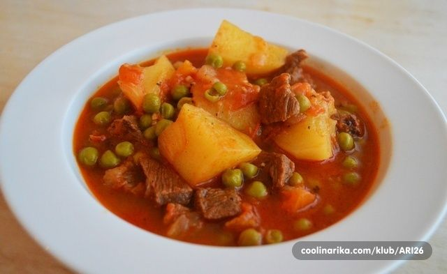

Antique, some would say dish for poor :) My family loves it! Potatoes stew is usually prepared as a lean meal, you can prepare it with meat and if you're fasting, you can even prepare it without oil. Your choice!
Ingredients
1.5 kg of potatoes
1 onion
2 carrots
20 ml of oil
1 tablespoon paprika
1 tablespoon of vegetable seasoning
salt if needed
parsley
a little black pepper
chopped pepper and tomato (optional)

Preparatio
Chop onion, add oil and spices, add a little water and let it cook until onions completely soften. Periodically add water.
During this time, clean and chop the potatoes into cubes or slices, as you prefer. Chop carrots. Add potatoes and carrots in the pot, pour water to cover well potatoes. Add the other veggies too. Leave to boil on medium heat, with occasional stirring.
Add pepper and salt, mix well and leave until everything is beautifully cooked. If it is too thick, add a little hot water periodically .
Try to check if it is salty, you can also add black pepper. Add fresh parsley in the end.